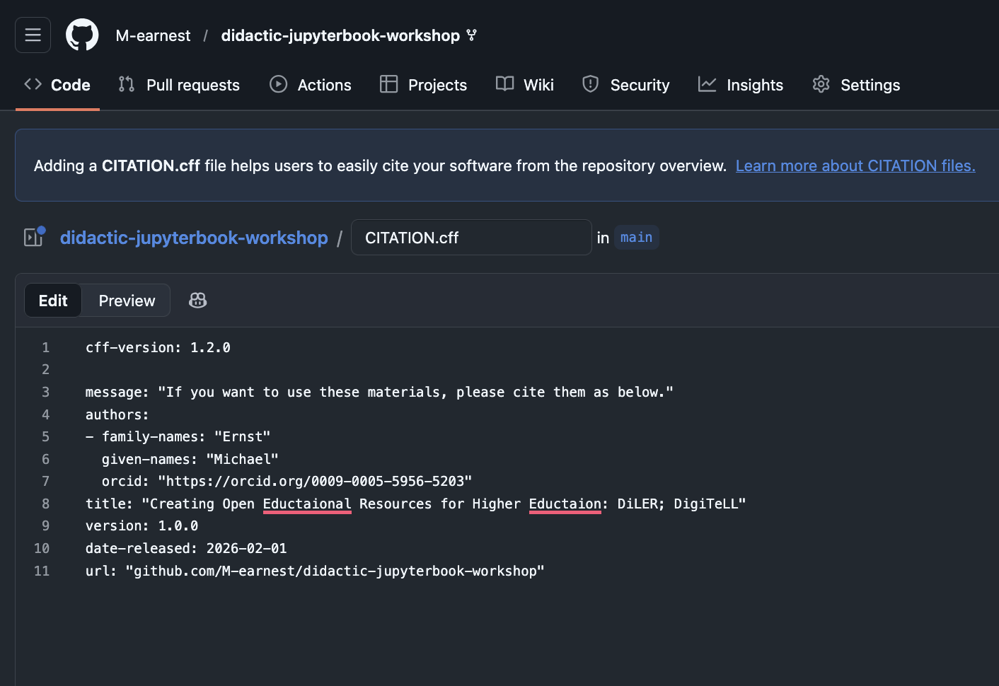
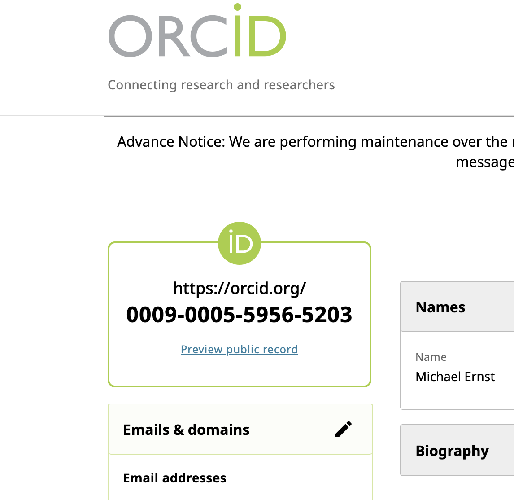
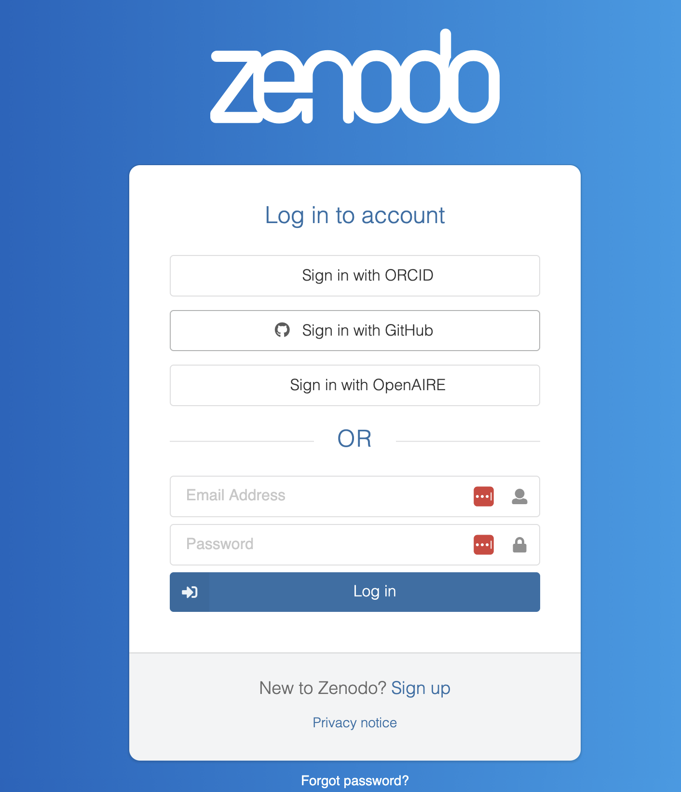
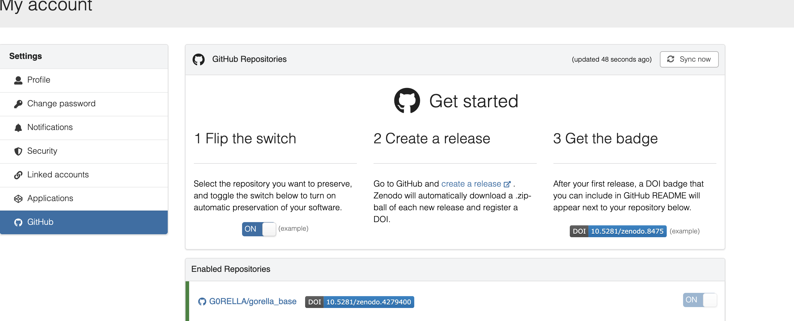
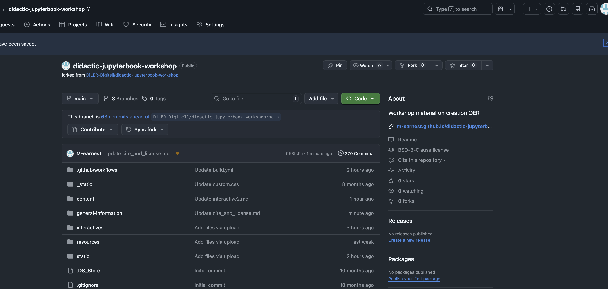
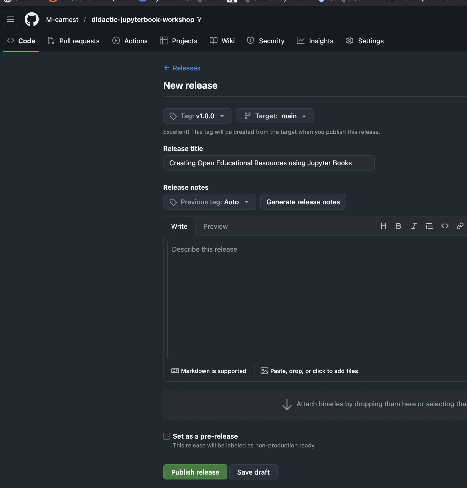
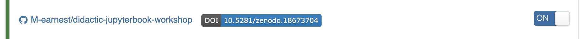
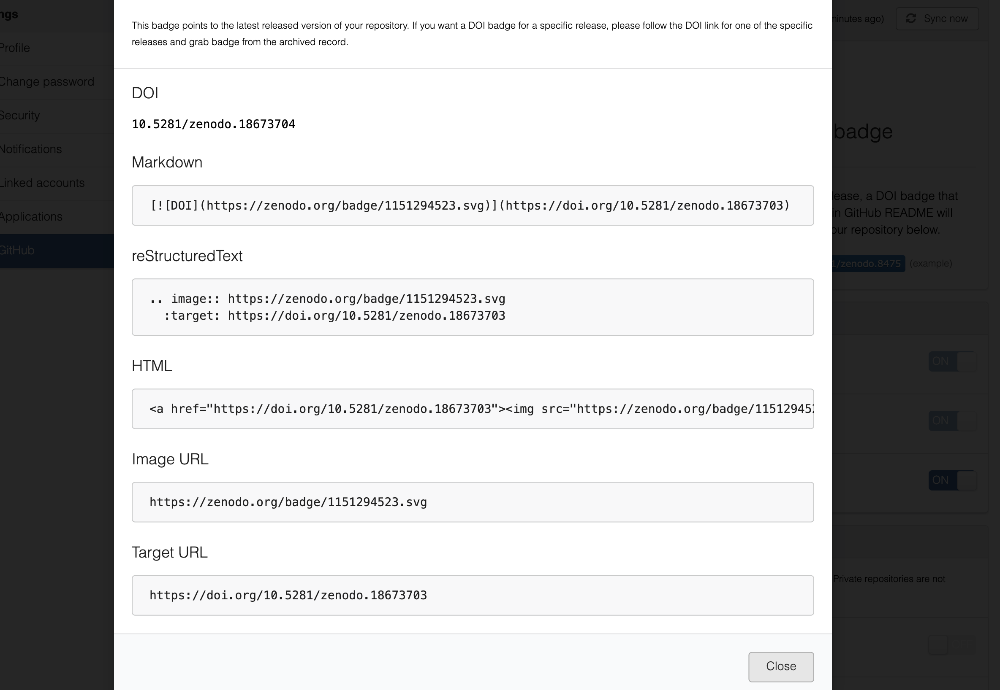

Licenses and Citations#
To associate your newly created course materials and properly credit your work, you want to create a unique Digital Object Identifiers (DOI). The best way to create a DOI for your GitHub Pages website is to use Zenodo. Zenodo has a native integration with GitHub that automatically archives your repository and mints a DOI whenever you create a “Release”. Meaning with each new version, e.g. a new iteration of your course, you can point people to the exact materials you worked. This is the industry standard for making code and static sites citable. Here is the step-by-step process to set this up correctly for APA citations.
1. Prepare Your Repository#
Before creating the DOI, add a CITATION.cff file to your repository. This file tells citation managers (like Zotero) and GitHub exactly how to format the citation.
Create a file named CITATION.cff in your root/base directory, meaning the lowest level of your folder structure:

Add the following, and replace the placeholder values with your name, the url to your repo and so on. If you already have an Orcid ID, you can add the link, as well.
[!NOTE] Otherwise, leave the “orcid” line as it is or quickly create one here. I highly encourage you to do so, as this will provide you with a unique, permanent ID that ensures you can credit your materials and distinguishes your work from anyone else with a similar name.

Paste this:
cff-version: 1.2.0
message: "If you want to use these materials, please cite them as below."
authors:
- family-names: "Lastname"
given-names: "Firstname"
orcid: "https://orcid.org/0000-0000-0000-0000" # Optional but recommended
title: "Title of Your Website/Project"
version: 1.0.0
date-released: 2026-02-01
url: "https://yourusername.github.io/your-repo"
2. Connect GitHub to Zenodo#
Go to Zenodo.org and log in using your GitHub account. Navigate to the GitHub Settings area (dropdown menu top right > GitHub).

You will see a list of your repositories. Flip the switch to ON for the repository you want to be citable.

3. Mint the DOI (Create a Release)#
Zenodo does not issue the DOI until you make a formal “Release” on GitHub. Go back to your repository on GitHub.
Click Releases (usually on the right sidebar) and create a new release.

Create a tag (e.g., v1.0.0), add a title, and click Publish Release. Zenodo will now automatically archive a snapshot of your code and generate a DOI.

4. APA Citation Format#
Once the process is complete, you can provide the following APA citation on your website: Format:
Author, A. A. (Year). Title of software or website (Version 1.0) [Computer software]. Zenodo. https://doi.org/10.xxxx/zenodo.xxxxxx
5. DOI Badge#
After completing Step 3, go back to your repository page on Zenodo. You will see a DOI badge (a small logo). Copy the Markdown code for this badge and paste it at the top of your GitHub README.md. This allows visitors to click one button to get the citation info.


6. Licensing#
The LICENSE#
Now you want to additionally define what and who can use, reproduce, or adapt your materials. For this, we use specific Licenses (you can find the different iterations [here](link to shit)) The course template already contains a BSD 3-Clause License. You’ll find the stipulations below. Feel free to modify the LICENSE file as needed, provided you comply with the terms outlined in our license.

Redistribution and use in source and binary forms, with or without
modification, are permitted provided that the following conditions are met:
* Redistributions of source code must retain the above copyright notice, this
list of conditions and the following disclaimer.
* Redistributions in binary form must reproduce the above copyright notice,
this list of conditions and the following disclaimer in the documentation
and/or other materials provided with the distribution.
* Neither the name of the copyright holder nor the names of its
contributors may be used to endorse or promote products derived from
this software without specific prior written permission.